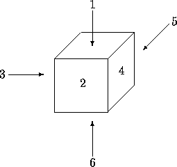
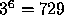
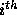
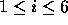
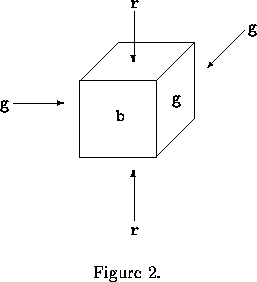
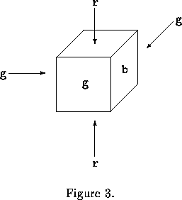

| Cube painting |
We have a machine for painting cubes. It is supplied with three different colors: blue, red and green. Each face of the cube gets one of these colors. The cube's faces are numbered as in Figure 1.

Figure 1.
Since a cube has 6 faces, our machine can paint a face-numbered cube in  different ways. When ignoring the face-numbers, the number of different paintings is much less, because a cube can be rotated. See example below. We denote a painted cube by a string of 6 characters, where each character is a b, r, or g. The  character (  ) from the left gives the color of face i. For example, Figure 2 is a picture of rbgggr and Figure 3 corresponds to rggbgr. Notice that both cubes are painted in the same way: by rotating it around the vertical axis by 90 , the one changes into the other.
 
The input of your program is a textfile that ends with the standard end-of-file marker. Each line is a string of 12 characters. The first 6 characters of this string are the representation of a painted cube, the remaining 6 characters give you the representation of another cube. Your program determines whether these two cubes are painted in the same way, that is, whether by any combination of rotations one can be turned into the other. (Reflections are not allowed.)
The output is a file of boolean. For each line of input, output contains TRUE if the second half can be obtained from the first half by rotation as describes above, FALSE otherwise.
rbgggrrggbgr rrrbbbrrbbbr rbgrbgrrrrrg
TRUE FALSE FALSE